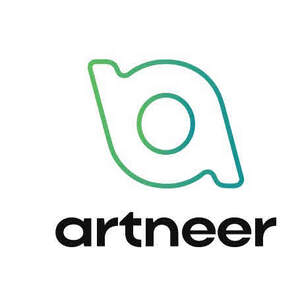

Trade Mark Journal No.2025/043 24 October 2025
UK00004279070 16 October 2025 (41,42)
Mark 1
Mark 2

Mark 3
- Class 41
- Education and training in the field of automotive engineering; Training in electrical engineering; Training services relating to computer-aided engineering design; Training services relating to electrical engineering.
- Class 42
- Engineering; Automotive design; Engineering and computer-aided engineering services; Technological consultancy in the field of aerospace engineering; Mechanical engineering; Engineering (engineering work); Mechanical engineering services; Industrial engineering design services; Technical consultation in the field of aerospace engineering; Electrical engineering services; Engineering design; Technical engineering; Telecommunications engineering consultancy; Software engineering; Design of engineering products; Research in the field of electrical engineering; Engineering services; Computer engineering; Engineering consultancy; Engineering design services; Computer-aided engineering design services; Engineering research; Structural engineering services; Engineering surveying; Engineering design and consultancy; Industrial testing of engineering works; Nuclear engineering services; Research relating to mechanical engineering; Engineering services relating to robotics; Engineering services in the field of building technology; Technological engineering analysis; Automotive inspections; Engineering services in the field of communications technology; Design and development of engineering products; Engineering testing; Engineering services in the field of energy technology; Software engineering services; Computer engineering consultancy services; Computer-aided engineering design and drawing services; Engineering work; Design of computer hardware for the manufacturing industries; Computer assisted engineering design services; Design and development of computer hardware for the manufacturing industries; Engineering consultancy relating to manufacture; Engineering consultancy services; Engineering consultancy relating to design; Computer software engineering; Engineering drawing services; Engineering consultancy relating to computer programming; Engineering drawing; Drawing (Engineering -); Research and development services in the field of engineering; Computer-aided industrial design; Technical project planning in the field of engineering; Development of computer hardware for the manufacturing industries; Technical consultancy in the design of machinery for electronic circuitry manufacture; Consultancy services relating to nuclear engineering; Engineering services related to integrated circuit diagnostics; Engineering services relating to computer programming; Architectural and engineering services; Technical planning and consulting in the field of light engineering.
Artneer Limited